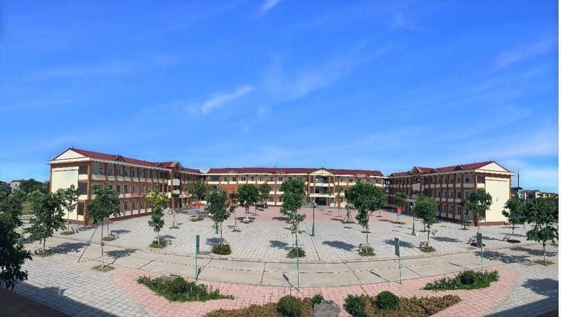

TỔNG QUAN VỀ TRƯỜNG TRUNG HỌC PHỔ THÔNG ĐỒNG ĐẬU
I. TẦM NHÌN
1. Trường THPT Thuận Thành số 1 là trường chất lượng cao trong hệ thống giáo dục quốc dân, tốp dẫn đầu các trường THPT tỉnh Bắc Ninh, sánh ngang với các trường tiên tiến xuất sắc trên toàn quốc.
2. Phấn đấu duy trì tốt các tiêu chuẩn của trường chuẩn Quốc gia và đạt các danh hiệu cao quí của Đảng và Nhà nước.
II. SỨ MỆNH
1. Phương châm giáo dục đạo đức: “Thành người trước khi thành tài”. Coi giáo dục lý tưởng, đạo đức là nền tảng bền vững từ đó xây dựng và tạo lập môi trường học tập, rèn luyện an toàn, lành mạnh.
2. Nâng cao chất lượng văn hóa đại trà và mũi nhọn. Tạo điều kiện để mỗi học sinh có cơ hội phát triển năng lực tiềm ẩn và tư duy sáng tạo, nhạy bén trong cuộc sống, nắm bắt cơ hội, thành công và thành đạt.
3. Ứng dụng tư duy giáo dục hiện đại trên nền tảng giáo dục truyền thống. Xây dựng môi trường sư phạm tiên tiến:Tiên phong, đổi mới, sáng tạo.

Nằm trên trục chính thuộc địa phận xã Trung Nguyên, trường THPT Đồng Đậu khai giảng năm học đầu tiên với 9 lớp, 450 học sinh, đội ngũ giảng dạy chỉ vẻn vẹn 22 giáo viên. Hơn 17 năm qua cùng với sự phát triển đi lên không ngừng của đất nước và sự nổ lực của tập thể cán bộ giáo viên, trường đã đạt được những thành tựu đáng kể với 35 lớp học, gần 1500 học sinh, có tập thể sư phạm 93 cán bộ quản lí và giáo viên, là một trong những trường có quy mô lớn, góp phần vào sự phát triển của Giáo Dục và Đào Tạo tỉnh Vĩnh Phúc nói chung, huyện Yên Lạc nói riêng.
Các thầy cô, CBGV nhà trường qua các thế hệ đến từ nhhiều quê hương, vùng miền khác nhau với nhiều trình độ chuyên được đào tạo khác nhau. Nhưng với lòng yêu nghề, mến trẻ hết lòng vì học sinh thân yêu. Các thầy, cô đã gắn bó với nghề, coi địa phương nơi công tác là quê hương thứ hai, xem học sinh như con em ruột thịt của mình. Các Thầy Cô đã xây dựng một mái trường sư phạm đoàn kết, dân chủ, kỷ cương, thân thiện một môi trường công tác tích cực cùng nhau khắc phục khó khăn hoàn thành xuất sắc nhiệm vụ được giao.
Tự hào hơn bao giờ hết chính nơi đây đã có nhiều thế hệ học sinh trưởng thành qua các khóa học. Nay đã và đang học tập và công tác trong nhiều lĩnh vực, nhiều đơn vị cơ quan, trường học trên mọi miền đất nước. Nhưng dù ở bất cứ đâu các thế hệ học sinh cũ cũng luôn hướng về mái trường mến yêu, nơi họ đã từng tham gia tu dưỡng, rèn luyện, học tập và gắn bó nhiều kỷ niệm của tuổi học trò.
Nhà trường luôn giữ mối quan hệ chặt chẽ với Đảng ủy, chính quyền địa phương, nhân dân, phụ huynh nơi công tác và nơi cư trú. Thường xuyên phối hợp tốt với các cơ quan ban ngành đoàn thể, các tổ chức xã hội,cơ quan đơn vị trên địa bàn tổ chức các buổi gặp mặt, các hoạt động giao lưu nhằm giáo dục truyền thống quê hương đất nước, truyền thống nhà trường cho CBGV và học sinh, thông qua đó CBGV và học sinh càng thêm yêu mến mái trường từ đó tiếp thêm nghị lực để phấn đấu vươn lên trong công.
Thực hiện chủ đề và chương trình, nhiệm vụ mỗi năm học, Ban giám hiệu và Hội đồng Giáo dục của Nhà trường đã xây dựng các kế hoạch công tác, đảm bảo khoa học, phù hợp với điều kiện hiện có của địa phương và nhà trường. Tổ chức thực hiện có hiệu quả cao các kế hoạch. Thường xuyên đổi mới PPDH, đổi mới kiểm tra đánh giá sát với đối tượng học sinh. Chú trọng việc bồi dưỡng và nâng cao chất lượng đội ngũ CBGV. 100% CBGV có trình độ chuẩn và trên chuẩn về chuyên môn. Nhà trường có 50% giáo viên đạt, CSTĐ – GVG các cấp. Trường có các tổ chuyên môn hoạt động khá, tốt, thường xuyên đổi mới và nâng cao chất lượng các buổi sinh hoạt chuyên môn. Tổ chức có hiệu quả các giờ thao giảng, giờ dạy điển hình, ứng dụng có hiệu quả CNTT trong soạn giảng. Quan tâm đến việc bồi dưỡng học sinh giỏi, phụ đạo học sinh yếu hàng năm. Chất lượng giáo dục có nhiều chuyển biến tích cực. Duy trì sĩ số học sinh 100% , tỷ lệ chuyên cần từ 98% trở lên. Tỷ lệ học sinh khá, giỏi đạt từ 35 đến 40%. Tỷ lệ học sinh yếu giảm dưới 2%. Tỷ lệ học sinh có hạnh kiểm khá tốt trên 90 %. Duy trì tỷ lệ phổ cập bậc THPT đạt trên 90%.
Các tổ chức đoàn thể trong Nhà trường hoạt động đều, có chất lượng hoạt động tốt, phối hợp chặt chẽ trong việc thực hiện các nhiệm vụ giáo dục của Nhà trường duy trì tốt các hoạt động thi đua, tổ chức thực hiện có hiệu quả cao các cuộc vận động, tiêu biểu là cuộc vận động: “Học tập và làm theo tấm gương đạo đức Hồ Chí Minh” trong nhà trường. Chi bộ hàng năm bồi dưỡng và kết nạp từ 2 đến 4 đảng viên mới. Liên tục giữ vững danh hiệu Chi bộ trong sạch vững mạnh xuất sắc, Công đoàn vững mạnh, Đoàn Thanh niên vững mạnh xuất sắc. Trường Khá và Tiên tiến .Năm học 2018 – 2019 với chủ đề “Tiếp tục đổi mới quản lý, nâng cao chất lượng giáo dục” thầy và trò nhà trường xác định rõ nhiệm vụ của cá nhân và tập thể trong Nhà trường. Chú trọng việc thực hiện có hiệu quả “Đổi mới”, đổi mới quản lý giáo dục, tiếp tục đổi mới PPDH, đổi mới kiểm tra đánh giá, nâng cao chất lượng giáo dục. Xây dựng trường học thân thiện, học sinh tích cực, giữ vững thành tích, Nhà trường đã chú trọng và tập trung vào các hoạt động tổ chức trải nghiệm sáng tạo cho học sinh bằng nhiều hình thức sinh hoạt: Câu lạc bộ Văn học dân gian; …
Trường THPT Đồng Đậu tuy bề dày thời gian còn mỏng nhưng lại có độ dày về thành tích, vì vậy tập thể cán bộ giáo viên, nhân viên trường mừng vui và trân trọng với những kết quả đã đạt được, họ mừng vì những viên ngọc được rèn dũa từ mái trường này sẽ được đơm hoa, kết trái, sẽ đem lại hạnh phúc cho đời và cho đất nước./.